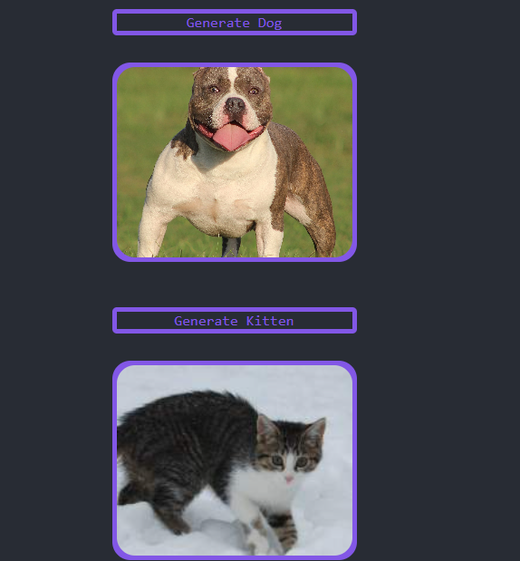
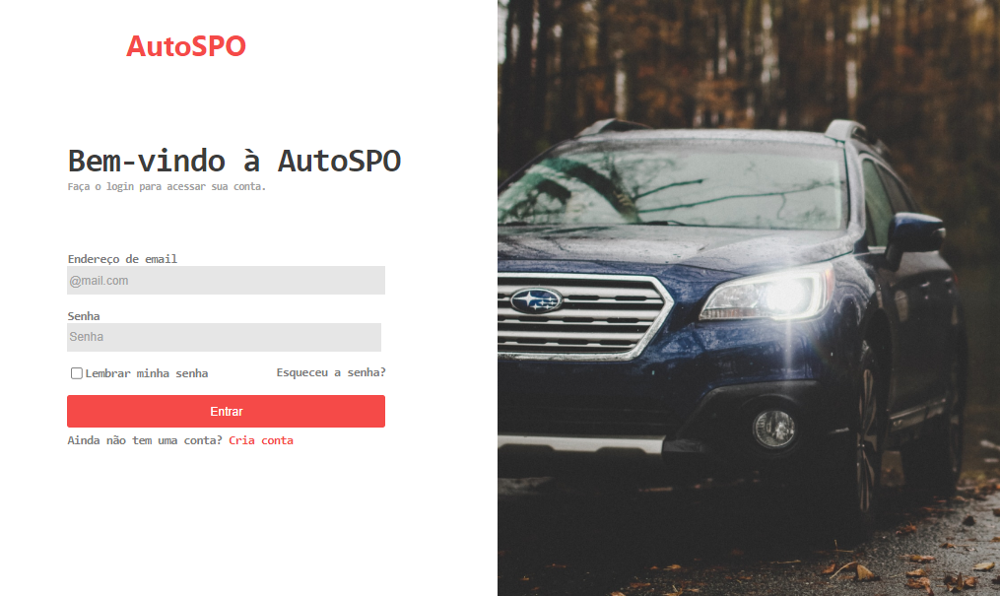

Projects
-
Lading page - Developed with HTML e CSS
This project was developed with HTML and CSS and in order to show my skills with HTML and CSS by making a screenshot or lading page...

-
Tic Tac Toe - Developed with HTML, CSS, JavaScript.
This project was developed with HTML, CSS and JavaScript in order to show my fluency in other languages...

-
Churrascometro - Developed with HTML, CSS e JAVASCRIPT.
This project was developed with HTML, CSS and JavaScript in order to help people have a barbecue by calculating barbecue statistics.

-
Game memory - Developed with HTML, CSS, JAVASCRIPT.
This project was developed with the aim of replicating a memory game with the programming languages that I am specialized in and the languages that were used to make it were JAVASCRIPT, CSS, HTML.

-
Todo - Developed with HTML, BOOTSTRAP AND REACTJS.
This project was made with the intention of being a normal list, with the automations of delete, done and not done.
-
ACTIVITIES MURAL - Developed with HTML, JAVASCRIPT and NODE.JS.
Activity wall This project was made to be an activity wall, with the automation of adding and deleting activities.

-
Networking-feed - Developed with REACT.JS, TYPESCRIPT E CSS MODULES.
É um projeto que fiz inspirado em um no ignite da rocket, ele foi desenvolvido com o propósito de parecer uma interface de qualquer rede social normal, com funções de comentário, like e delete no comentário!!

-
Api dog and kitten - Developed with React, Axios e css.
This project aims to generate images at the click of a button, the images are being taken from an api and will be randomly requested when pressing the button... üöÄ

-
AutoSpo - Developed with REACT, JAVASCRIPT, CSS and AXIOS.
I made a project that will work with authentication to simulate a car website...
